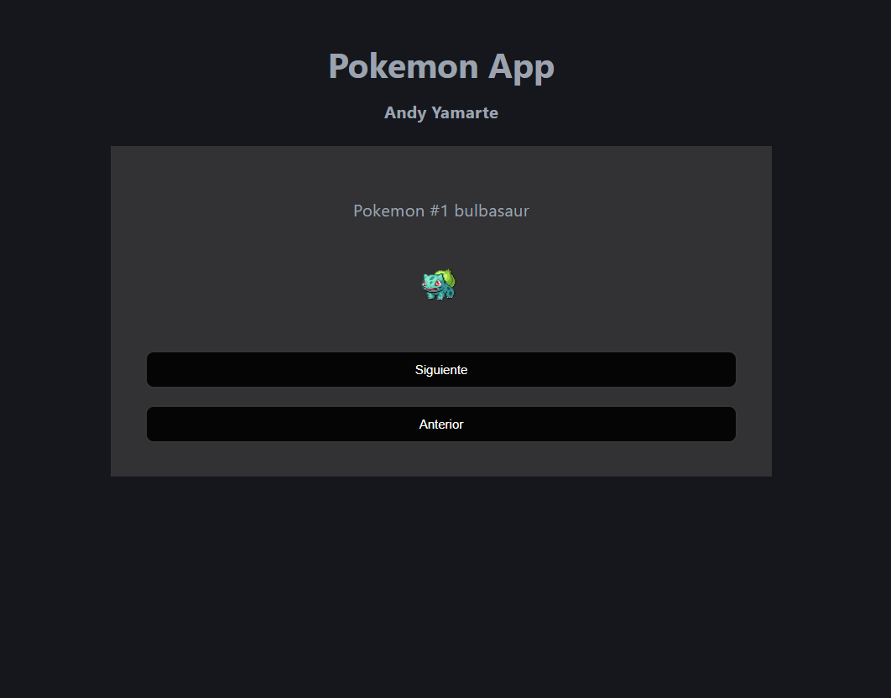
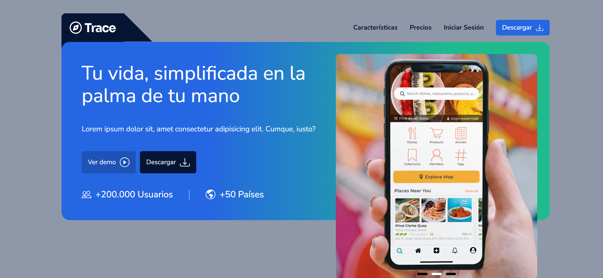

Proyectos

Black-Jack
Cree un juego de cartas utilizando las tecnologías Html, Css, Javascript, este proyecto utilice mucho mas Javascript y tambien una libreria llamada underscore con esto cree un mazo de cartas aleatorio.

Diseño Figma
Cree un diseño en utilizando la herramienta de figma donde apliqui varios elementos como componentes, hovers, colores y tamaños

Poke-API
Consumiendo API en la cual utilice vite para utilizar un entorno moderno, tambien utilice vanilla javascript y utilice el metodo fetch y su promesa utilizando async y await.

Blog Notas
Implemente "Clean Arquitecture" para definir bien las carpetas y todo este en orden, tambien utilice y diseñe variantes de entornos para que al actualizar la pagina no se cargue toda la pagina, mas bien quede guardado lo implementado o modificado.

Comida asiatica
Un diseño para un restaurante en la cual utilice html css y javascript con la potencia de una galeria utilizando grid y su responsive.

Startup
Pagina startup donde implemente un carrusel par el cambio de fotos automaticos,en los enlaces, con javascript enlace las fotos y se cambian al hacer click